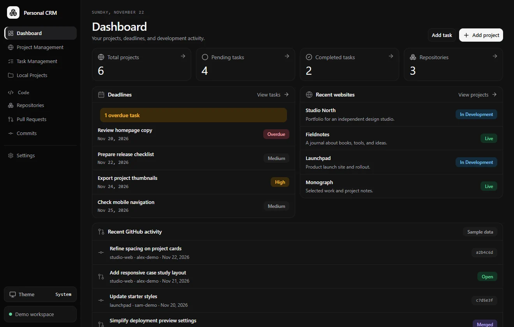

My workspace for
projects, tasks,
and code.
A personal CRM for tracking website work, finding local projects, and keeping up with public GitHub activity.
Explore the workspaceInside the workspace
Explore seven views from the CRM with sample data.

See upcoming deadlines, recent website projects, and GitHub activity in one view.
Why I built it
I wanted one place to see what I was working on, what was due next, and where to pick up the code. cmndrCRM brings those parts of my workflow together.
- Frontend
- React, TypeScript, Vite, Tailwind CSS
- Backend
- Supabase Auth and PostgreSQL
- GitHub
- Public API with browser caching
A few quick answers
Can I use the live CRM?
The live workspace is for its approved owner. The walkthrough is open to everyone and uses sample data.
What GitHub data does it show?
Public repositories, pull requests, and commits from the linked GitHub account. The preview uses sample records.
How do Local Projects work?
Save Windows folder paths and copy ready-to-paste PowerShell or CMD commands from the app.